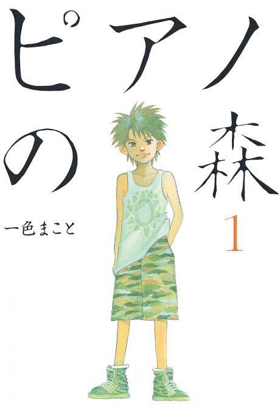

Anime

Manga2018 · Drama, Music
Forest of Piano
ピアノの森 (TV)
AniList7.1
Animeter—
2 seasons24 ep
MangaDone
Is it worth pushing through?
Built from what visitors report across all 2 seasons (24 episodes).
Loading reports…Checking what other people said about this one.
Sign in with your email at the top of the page to add your report.